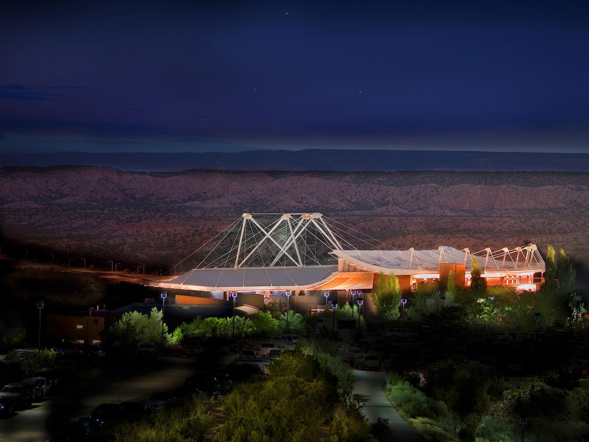
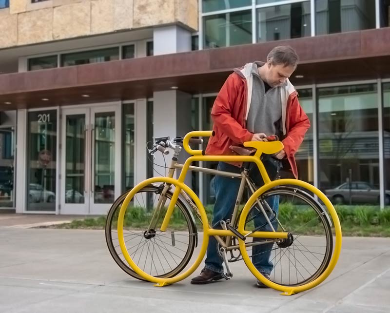
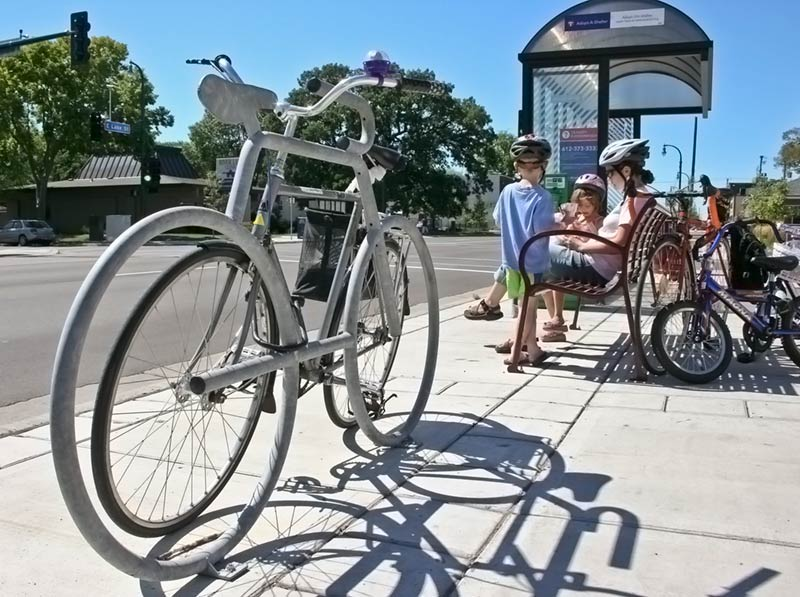

Good Design vs. Bad Design: Santa Fe Opera House vs. The Dero Bike Rack
A discussion of one immaculate performance space design and a flawed bike protection invention.
By Jess Williams
September 30th, 2018
NEW YORK, NY - On Thursday afternoon, I had the pleasure of sitting down with New School University student, Aja Simpson, to discuss two objects that resonated with her. One object she admired because of it's impeccable and extremely thoughtful, innovative construction and design. The other object, however, she despised because of faux usefulness and flawed design.
For starters, Santa Fe, New Mexico is home to one of the most renowned and beautiful opera houses in the world. The Santa Fe Opera House, is an impeccably designed building that features elements that are unique to the opera house. Aja cited that her number one favorite thing about the opera house was its beautiful location. The opera house, placed on the outskirts of Santa Fe's city center, stands alone in the New Mexican desert with the mountains in the background. "From far away it looks really cool, yet obscure" Simpson stated.
The curvature of the roof of the opera house was a deliberate design decision so that the sound would travel farther, allowing the upper mezzanine to hear the opera without any issues. "There's no microphone usage at the opera house for that reason" says Aja. The roof curvurture also prevents any sort of possible sound obstruction from the outdoor elements, including rain, wind and thunderstorms.
The Santa Fe Opera House is a seasonal performance space, meaning that it is only open for performances during the summer months. However, the summer months, specifically July and August, are monsoon season in Santa Fe. Seeing as there are no side walls to the venue, the building designers thoughtfully allotted extra space for the roof to extend over the seats on the outskirts of the venue. However, Aja noted that sometimes the rain can be unpredictable and could possibly blow in a direction that would cause patrons in the far seats to get wet.

What is perhaps the most amazing feature of this opera house is also one of the smallest. Desingers of the opera house came to a realization that the majority of opera's that are performed at the opera house are in foreign languages. So, the opera house is equipped with a bar in front of each seat that translates the opera in real time. This system is called the Labretto System. And you might be skeptical that real time really means real time, but Aja explained that there are employees whose jobs it is to sit in a room and actively translate the opera as it is going on, so as to prevent any translation lagging.
Opera house designers also added multiple elements to help with the absorbtion of sound throughout the performance space. Aja details that "there’s an infinity pool at the Opera House, in between the orchestra pit and the first row of seats...so that the water can absorb some of the echoing from the sound" And on the open sides of the opera house, wind baffles were installed to help absord ehoing.
You can watch this short YouTube video below to get a full view of how beautiful and impeccably designed the Santa Fe Opera House is.
Now, in order to delve into the next - and completely unrelated - topic, allow me to offer some background information to help you further understand why this poorly designed object is disliked so strongly by Aja. Born in Santa Fe, New Mexico, Aja attended the University of New Mexico for her first two years of university. Aja discussed that the City of Albuquerque, where her university was located, was not the safest city. She mentioned the cities high rate of crime and that some city patrons would go to extreme ends to steal bikes and bike parts. So it's no wonder that Aja feels so strongly about this unique, but less than effective bike rack from Dero.
"It’s dumb because I've tried to use one of them before, and it only works for one bike." Aja says. The reason that it only works for one bike, is because you have three areas where you can lock your bike and those locations are the exact locations you need to lock your bike up in order to securely fasten your bike properly: the front and back wheels as well as the main seat.
What is perhaps the most flawed element of this design is the Dero bike rack's functionality in large major cities. When bike racks like this are the only type of bike rack on a college campus, it can be a challenge because there is a high volume of bikes and not enough space on the bike rack. This causes students to leave their bikes unlocked, unprotected and alone in an effort to make it to class on time - thus causing a higher presence of stolen and lost bikes.
Another big reason the Dero bike rack is not functional, is that bikes comes in a diverse range of shapes and sizes. It can be very hard to find a bike that would fit perfectly to the Dero bike rack frame, and what do you do when your bike doesn't fit against the bike rack properly causing your U-Lock to not lock properly.
Don't get me wrong, Aja is a fan of the concept behind the design of the Dero bike rack. "It’s kind of cool to look at." she says. A lot of articles online describe the bike rack as a “purposeful” art piece.
And lastly, the sheer size of the bike rack is not practical in most cities. The length of the bike rack is approx 5 feet long, which is a lot in cities like New York, where the sidewalk space is already limited and there is not nearly enough room to add these oversized, impractical bike racks.